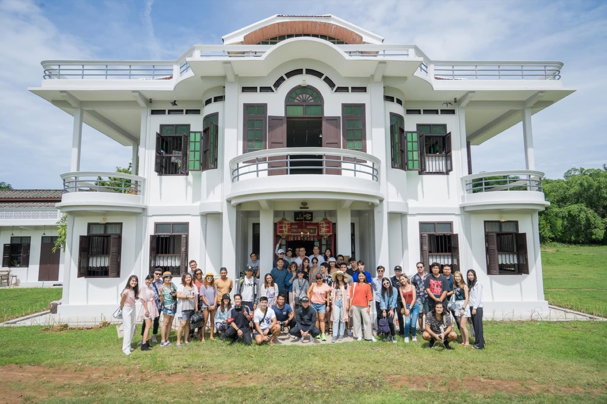

2562 · กิจการ · บันทึกย่อย
บ้านอาจ้อรับแขก 60 คนเป็นครั้งแรก

ยินดีต้อนรับ ทีม Roxy Thailand ดารา blogger และสื่อทุกๆคนครับ 🙂
ครั้งแรกของบ้านอาจ้อ ที่รับแขกกว่า 60+ คน เข้าในบ้าน และ ร้านโต๊ะแดง เป็นการเปิดซ้อมที่ระทึกขั้นสุด แต่ก็เตรียมตัวขั้นสุดเช่นเดียวกัน
ดีใจที่ทุกคนชอบทั้งสถานที่ บ้าน บรรยากาศ รสชาติอาหาร งานบริการ แบบครบทุกองค์ประกอบเลย
ขอบคุณทีมงานทุกคน ที่ช่วยระดมทั้งความคิดทั้งแรงงานทำให้งานสำเร็จลุล่วงไปได้ด้วยดี 🙂
พี่หนึ่งและทีมงาน Roxy เจ้าของงาน ที่ให้โอกาสบ้านอาจ้อได้ต้อนรับแขกคนสำคัญของ Roxy Thailand และป็นส่วนสำคัญที่เข้าวางแผนจัดเตรียมงานอย่างมืออาชีพ
Pearl Pattasuda และทีม fb Proud Phuket ที่ช่วยตั้งแต่เตรียมงาน วางแผนไปจนถึงบริการในร้านอย่างมืออาชีพ จนงานเสร็จเรียบร้อย
Phatthida Pattie Phasintharat Set Bybank ทีม production และช่างภาพ อีกหนึ่งผู้อยู่เบื้องหลังความสำเร็จของงาน จัดเตรียมสถานที่ และถ่ายรูปได้สวยสุดๆ แขกที่เข้าร้านถึงกับร้องว้าวกันเลย
Nutnaii Thongleng ที่มาดูแลเปิดเพลงให้บรรยากาศทั้งบ้านและร้านอย่างมืออาชีพ
สุดท้ายทีมงานบ้านอาจ้อทุกคน ที่จัดเตรียมความพร้อมทุกอย่าง ทั้งก่อนงานหลังงาน สถานที่สวยอลัง ข้าวของเครื่องใช้พร้อม และ อาหารต่างๆในงานอร่อยขั้นสุด และหาทานได้ยาก
งานจบ แต่รูปไม่จบ จะค่อยๆทยอยตามมาฮะ 😇
#RoxyMakeWavesMoveMountainsTour2019
#BaanArJor
#RoxyThailand
#Tohdaeng